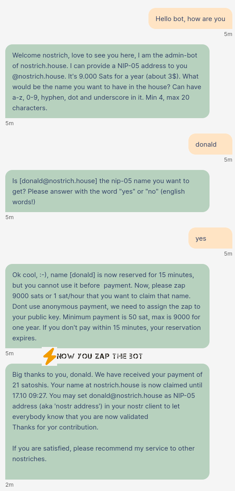

It's a simple, open protocol that enables a truly censorship-resistant and global social network, allowing individuals to freely express their opinions and engage in activities without fear of reprisal or discrimination.
It serves as a user-friendly identifier for your identity, similar in appearance to an email address, for instance: service@nostrich.house. This identifier simplifies the process of locating your profile on Nostr, distinguishing you from bots and spammers. Moreover, it is significantly more memorable than a lengthy 64-digit hexadecimal string.
Example
It's anonymous, straightforward, affordable, and boasts an impressively stylish domain. As we expand our platform, we're transforming it into a genuine haven for ostrich enthusiasts. Our unwavering commitment to serving the nostrich community is absolute.
Choose your preferred payment method with flexibility. It's just 1 Satoshi per hour, approximately 9,000 Satoshis annually. At a Bitcoin value of 30,000 USD, this translates to as little as 3 USD for a full year. You have the option to make a quick zap payment to the bot or reach out to service@nostrich.house for assistance.
It's as straightforward as can be. Simply initiate a direct message with our robotic assistant, nostrich@nostrich.house (i.e. here at satellite).It will promptly generate your address for immediate usage. Just greet the bot, and it will guide you through the necessary steps. In the event of any issues, our human support team is readily available at service@nostrich.house.

Where bots meet nostriches...
Anonymity and decentralization offer crucial advantages in the modern digital landscape. Anonymity preserves privacy, allowing individuals to freely express their opinions and engage in activities without fear of reprisal or discrimination. It fosters open discourse, enabling whistleblowers, activists, and marginalized voices to speak out without risk. Decentralization, on the other hand, distributes power and control across a network, reducing vulnerability to single points of failure and censorship. It enhances security, resilience, and inclusivity by promoting a more equitable and transparent system. Together, anonymity and decentralization uphold fundamental rights and fortify the foundation of a more democratic and robust digital world.